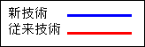

(開発中)
※太字の項目は入力必須項目です。
(半角入力) 例：1997
例：1997/04/01
情報提供の範囲：
分類・区分
レベル１から順に選択して下さい。（新技術が主に活用される分類を分類１に入力して下さい。）
キーワード
最大で３つまで選択して下さい。
開発目標
最大で３つまで選択して下さい。
（）
開発体制
（共同開発の場合はすべて記入）（半角ｶﾀｶﾅ 及び 連続するｽﾍﾟｰｽ は入力できません。）
検索結果に表示する技術の概要です。全角127文字以内で入力して下さい。
技術概要(アブストラクト)
(半角ｶﾀｶﾅ 及び 連続するｽﾍﾟｰｽ は入力できません。)
NETISに掲載する概要です。
概要
①～③は入力支援コメントです。変更及び削除はしないで下さい。
文章 (半角ｶﾀｶﾅ 及び 連続するｽﾍﾟｰｽ は入力できません。) 全角で1000文字まで
概要写真：

概要写真タイトル：
概要写真ファイル名：
見出し 列数：
見出し 行数：
新規性及び期待される効果
①・②は入力支援コメントです。変更及び削除はしないで下さい。
文章 (半角ｶﾀｶﾅ 及び 連続するｽﾍﾟｰｽ は入力できません。) 全角で1000文字まで
新規性と効果の写真：

新規性と効果の写真タイトル：
新規性と効果の写真ファイル名：
見出し 列数：
見出し 行数：
適用条件
①～④は入力支援コメントです。変更及び削除はしないで下さい。
文章 (半角ｶﾀｶﾅ 及び 連続するｽﾍﾟｰｽ は入力できません。) 全角で1000文字まで
適用範囲
①～④は入力支援コメントです。変更及び削除はしないで下さい。
文章 (半角ｶﾀｶﾅ 及び 連続するｽﾍﾟｰｽ は入力できません。) 全角で1000文字まで
留意事項
①～④は入力支援コメントです。変更及び削除はしないで下さい。
文章 (半角ｶﾀｶﾅ 及び 連続するｽﾍﾟｰｽ は入力できません。) 全角で1000文字まで
活用の効果の根拠
比較の対象となる従来技術名を記入下さい。
経済性、工程を比較するための基本となる数量を入力して下さい。
基準とする数量：
単位：
（例：100m, 1kmなど）
新技術の内訳
合計：
円
／
従来技術の内訳
合計：
円
／
根拠の計算
| 新技術 | 従来技術 | 変化値 | |
|---|---|---|---|
| 経済性 | 円 | 円 | 0 ％ |
| 工程 | 日 | 日 | 0 ％ |
経済性と変化値は上記の入力に従って自動計算されます。変化値がマイナスの場合は低下を表します。
活用の効果
比較の対象となる従来技術名を記入していただけなければ、以下の各項目を入力することはできません。
経済性及び工程は、「活用の効果の根拠」にて、新技術及び従来技術の内訳を記入して下さい。
算出された変化値により自動で選択されます。
経済性：
向上
同程度
低下
変化値：
0 ％
比較のポイント：
工程：
短縮
同程度
増加
変化値：
0 ％
比較のポイント：
品質：
比較のポイント：
安全性：
比較のポイント：
施工性：
比較のポイント：
周辺環境への影響：
比較のポイント：
自由設定項目１：
比較のポイント：
自由設定項目２：
比較のポイント：
新技術のコストタイプ：
施行単価
文章 (半角ｶﾀｶﾅ 及び 連続するｽﾍﾟｰｽ は入力できません。) 全角で1000文字まで
登録技術の費用内訳書を、以下の表に記入して下さい。初期記入内容は入力参考例です。内容を確認後、表に入力して下さい。
見出し 列数：
見出し 行数：
歩掛の種類：
施工方法
文章 (半角ｶﾀｶﾅ 及び 連続するｽﾍﾟｰｽ は入力できません。) 全角で1000文字まで
施工方法の写真：

施工方法写真タイトル：
施工方法写真ファイル名：
見出し 列数：
見出し 行数：
今後の課題とその対応計画
①・②は入力支援コメントです。変更及び削除はしないで下さい。
文章 (半角ｶﾀｶﾅ 及び 連続するｽﾍﾟｰｽ は入力できません。) 全角で1000文字まで
施工実績
実績件数(国土交通省(旧建設省、旧運輸省含む))
件
現在入力している新技術に関するもの以外は入力しないで下さい。
国土交通省における施工実績(20件まで)
実績件数(国土交通省(旧建設省、旧運輸省含む)以外)
件
件
現在入力している新技術に関するもの以外は入力しないで下さい。
国土交通省以外における施工実績(20件まで)
特許・実用新案
特許：
特許-通常実施権：
特許-専用実施権：
特許：
特許-通常実施権：
特許-専用実施権：
特許：
特許-通常実施権：
特許-専用実施権：
特許：
特許-通常実施権：
特許-専用実施権：
特許：
特許-通常実施権：
特許-専用実施権：
実用新案：
実施新案-通常実施権：
実施新案-専用実施権：
有りの場合：
特許番号：
備考
(半角ｶﾀｶﾅ 及び 連続するｽﾍﾟｰｽ は入力できません。) 全角で1000文字まで
第三者評価・表彰等
※「建設技術(番号)」、「評価年月日」、「評価機関」のどちらかを入力した場合は、残りの項目が必須入力になります。
(半角入力) 例:1997/04/01
(半角入力)
※「建設技術評価(番号)」、「評価年月日」のどちらかを入力した場合は、残りの項目が必須入力になります。
(半角入力) 例:1997/04/01
(半角入力)
現在入力している新技術に関するもの以外は入力しないで下さい。
(20件まで)
実験等実施状況
文章 (半角ｶﾀｶﾅ 及び 連続するｽﾍﾟｰｽ は入力できません。) 全角で1000文字まで
実験等実施状況の写真：

実験等実施状況写真タイトル：
実験等実施状況写真ファイル名：
見出し 列数：
見出し 行数：
添付資料
文章 (半角ｶﾀｶﾅ 及び 連続するｽﾍﾟｰｽ は入力できません。) 全角で1000文字まで
参考文献
文章 (半角ｶﾀｶﾅ 及び 連続するｽﾍﾟｰｽ は入力できません。) 全角で1000文字まで
その他(写真及びタイトル) 画像ファイル名を選択して下さい。
その他の写真1：

その他の写真1タイトル：
その他の写真1ファイル名：
その他の写真2：

その他の写真2タイトル：
その他の写真2ファイル名：
その他の写真3：

その他の写真3タイトル：
その他の写真3ファイル名：
注）その他1,2,3の画像は最後に表示されます。
写真や図などは、JPEG/PNG/GIF形式の画像ファイルにして下さい。
画像の横幅は最大でも600ピクセル(ドット)におさまるようにして下さい。
画像ファイルの大きさは 185K バイト 以内にして下さい。
画像の横幅は最大でも600ピクセル(ドット)におさまるようにして下さい。
画像ファイルの大きさは 185K バイト 以内にして下さい。
次のボタンをクリックすると、入力内容を検査します。
| 新技術情報 | ||||||||
|---|---|---|---|---|---|---|---|---|
| 技術名称 | 開発年 | |||||||
| 副題 | 区分 | |||||||
| 情報提供の範囲 | 国土交通省のみ 国土交通省以外の公的機関 一般 | |||||||
| 分類 | レベル1 | レベル2 | レベル3 | レベル4 | ||||
| 分類1 | ||||||||
| 分類2 | ||||||||
| 分類3 | ||||||||
| 分類4 | ||||||||
| 分類5 | ||||||||
| キーワード | 安全・安心 環境 情報化 コスト縮減・生産性の向上 公共工事の品質確保・向上 景観 伝統・歴史・文化 リサイクル | |||||||
| 自由記入 | ||||||||
| 開発目標 | 省人化 省力化 経済性の向上 施工精度の向上 耐久性の向上 安全性の向上 作業環境の向上 周辺環境への影響抑制 省資源・省エネルギー 品質の向上 リサイクル性向上 その他： | |||||||
| 開発体制 | 単独 （ 産 、 官 、 学 ）、 共同研究 （ 産・官・学 、 産・産 、 産・官 、 産・学 ） | |||||||
| 開発会社 | ||||||||
| 問合せ先 | 技術 | 会社 | ||||||
| 担当部署 | 担当者 | |||||||
| 郵便番号 | ||||||||
| 住所 | ||||||||
| TEL | FAX | |||||||
| URL | ||||||||
| 営業 | 会社 | |||||||
| 担当部署 | 担当者 | |||||||
| 郵便番号 | ||||||||
| 住所 | ||||||||
| TEL | FAX | |||||||
| URL | ||||||||
| 問合せ先（その他） | ||||||||
| 新技術情報 | |
|---|---|
| 技術名称 | |
| 概要(アブストラクト) |
|---|
| 概要 |
|
|
| 技術のアピールポイント(課題解決への有効性) |
| 新規性及び期待される効果 |
|
|
| 適用条件 |
| 適用範囲 |
| 留意事項 |
| 活用の効果 | ||||||||||||||||||||
|---|---|---|---|---|---|---|---|---|---|---|---|---|---|---|---|---|---|---|---|---|
| 比較する従来技術 | ||||||||||||||||||||
| 項目 | 活用の効果 | 比較の根拠 | ||||||||||||||||||
| 経済性 | 向上 | 同程度 | 低下 | |||||||||||||||||
| 工程 | 短縮 | 同程度 | 増加 | |||||||||||||||||
| 品質 | 向上 | 同程度 | 低下 | |||||||||||||||||
| 安全性 | 向上 | 同程度 | 低下 | |||||||||||||||||
| 施工性 | 向上 | 同程度 | 低下 | |||||||||||||||||
| 周辺環境への影響 | 向上 | 同程度 | 低下 | |||||||||||||||||
| 向上 | 同程度 | 低下 | ||||||||||||||||||
| 向上 | 同程度 | 低下 | ||||||||||||||||||
| コストタイプ | ||||||||||||||||||||
| 活用の効果の根拠 | ||||||||||||||||||||
変化値：マイナスの場合は、低下を示す。
●新技術の内訳
合計： 円
／
●従来技術の内訳
合計： 円
／
|
||||||||||||||||||||
| 施工単価 | ||||||||||||||||||||
|
歩掛の種類（
歩掛なし、
標準歩掛、
暫定歩掛、
協会歩掛、
自社歩掛
）
|
||||||||||||||||||||
| 施工方法 | ||||||||||||||||||||
|
|
||||||||||||||||||||
| 今後の課題とその対応計画 | ||||||||||||||||||||
| 実績件数 | ||
|---|---|---|
| 国土交通省 | その他公共機関 | 民間等 |
|
件
|
件
|
件
|
|
|
||
| 特許・実用新案 | |||||
|---|---|---|---|---|---|
| 種類 | 特許の有無 | 特許番号 | |||
| 特許 | 有り 出願中 出願予定 無し | ||||
| 特許詳細 | |||||
| 特許番号 | 実施権 | 通常実施権 専用実施権 | |||
| 特許権者 | |||||
| 実施権者 | |||||
| 特許料等 | |||||
| 実施形態 | |||||
| 問合せ先 | |||||
| 特許番号 | 実施権 | 通常実施権 専用実施権 | |||
| 特許権者 | |||||
| 実施権者 | |||||
| 特許料 | |||||
| 実施形態 | |||||
| 問合せ先 | |||||
| 特許番号 | 実施権 | 通常実施権 専用実施権 | |||
| 特許権者 | |||||
| 実施権者 | |||||
| 特許料 | |||||
| 実施形態 | |||||
| 問合せ先 | |||||
| 特許番号 | 実施権 | 通常実施権 専用実施権 | |||
| 特許権者 | |||||
| 実施権者 | |||||
| 特許料 | |||||
| 実施形態 | |||||
| 問合せ先 | |||||
| 特許番号 | 実施権 | 通常実施権 専用実施権 | |||
| 特許権者 | |||||
| 実施権者 | |||||
| 特許料 | |||||
| 実施形態 | |||||
| 問合せ先 | |||||
| 実用新案 | 特許の有無 | ||||
| 有り 出願中 出願予定 無し | |||||
| 特許番号 | 実施権 | 通常実施権 専用実施権 | |||
| 備考 | |||||
| 第三者評価・表彰等 | |||||
| 港湾関連民間技術の確認審査・評価 | 港湾に係る民間技術評価 | ||||
| 証明機関 | |||||
| 番号 | |||||
| 証明年月日 | |||||
| URL | |||||
| その他の制度等による証明 | |||||
| 制度の名称 | |||||
| 番号 | |||||
| 証明年月日 | |||||
| 証明機関 | |||||
| 証明範囲 | |||||
| URL | |||||
| 評価・証明項目と結果 | ||
|---|---|---|
|
|
||
| 実験等実施状況 | ||
|
|
||
| 添付資料 | ||
| 参考文献 | ||
| その他（写真及びタイトル） | ||
|
|
この項目を削除しますか？
半角
半角 例:1997/04/01
半角 例:1997/04/10
半角
半角 例:1997/04/01
半角 例:1997/04/10
この項目を削除しますか？
半角
半角 例:1997/04/01
半角 例:1997/04/10
半角
半角 例:1997/04/01
半角 例:1997/04/10
この項目を削除しますか？
function 国土交通省以外の実績削除ダイアログ表示() {
let selectedRow = $("#国土交通省以外実績表").find('table tr.highlight');
if (selectedRow && selectedRow.length > 0) {
// 選択行のインデックスを取得。
let rowIndex = selectedRow[0].rowIndex;
// 表_データを取り出す。
let e0 = 国土交通省以外実績表_データ[rowIndex]["工事名"];
// 値設定。
$("#国土交通省以外の実績削除項目").text(e0);
// ダイアログを表示。
$("#国土交通省以外の実績削除ダイアログ").dialog({
modal: true,
title: "国土交通省以外の実績削除",
buttons: {
"OK": function() {
// 削除する。
$("#国土交通省以外実績表").jsGrid("deleteItem", selectedRow);
国土交通省以外実績表更新();
// ダイアログを閉じる。
$(this).dialog("close");
},
"キャンセル": function() {
// ダイアログを閉じる。
$(this).dialog("close");
}
}
});
}
}
( 半角ｶﾀｶﾅ 及び 連続するｽﾍﾟｰｽは入力できません。)
試験・調査内容
(全角で510文字まで)
結果
(全角で510文字まで)
( 半角ｶﾀｶﾅ 及び 連続するｽﾍﾟｰｽは入力できません。)
試験・調査内容
(全角で510文字まで)
結果
(全角で510文字まで)
この項目を削除しますか？
該当するコストタイプを選択して下さい。

損益分岐点型：Ａ
平行型：Ｂ
発散型型：Ｃ
サイクルコスト型：Ｄ
サイクルコスト型を選択する場合は、以下の表を入力して下さい。
サイクルコスト（円／ｍ2）
| 1年 | 3年 | 5年 | 10年 | |
|---|---|---|---|---|
| 新技術 | ||||
| 従来技術 |
項目名：
仕様：
数量：
単位：
単価(円)：
金額(円)：
摘要：
項目名：
仕様：
数量：
単位：
単価(円)：
金額(円)：
摘要：
この項目を削除しますか？
項目名：
仕様：
数量：
単位：
単価(円)：
金額(円)：
摘要：
項目名：
仕様：
数量：
単位：
単価(円)：
金額(円)：
摘要：
この項目を削除しますか？